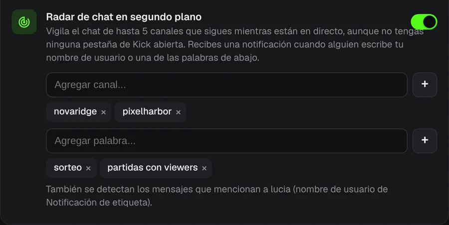

No te pierdas ni un directo de Kick.
Tu streamer favorito empieza el directo a las 3 de la mañana. KickAlert te avisa en el escritorio en ese mismo momento, aunque no tengas Kick abierto. Gratis, sin límite de canales y sin rastreo.
Pronto en Edge y Opera
 KickAlert
KickAlertAvisos al instante
KickAlert usa la conexión en tiempo real de Kick, así que el aviso llega cuando empieza el directo, no minutos después. Elige un sonido por canal, define horas de silencio o pausa todo hasta la mañana.

Apertura automática
Elige qué canales se abren solos. El directo se abre en una pestaña nueva en cuanto empieza, sin pestañas duplicadas, y la pestaña puede cerrarse sola si un raid lleva el directo a otro canal.

Entérate de lo que pasa
Raids, fin del directo, cambios de categoría y directos trasladados pueden tener su propio aviso y su propio sonido, canal por canal.

Radar de chat
Recibe un aviso cuando tu nombre o una palabra que elijas aparezca en hasta 5 chats, aunque Kick esté cerrado. Los filtros ocultan el spam y detectan palabras escritas con letras parecidas.

Hasta cuatro directos en una pestaña
Los directos empiezan silenciados. Activa el sonido del que quieras con un clic, con el chat en un panel lateral.

Imágenes de directos con fines ilustrativos.
Tus datos se quedan en tu navegador
- Sin analíticas ni rastreo
- Solo se comunica con kick.com
- Cada permiso se explica la primera vez que lo abres
- Código abierto en GitHub
Preguntas
¿KickAlert es gratis?
Sí. Todas las funciones son gratis y no hay límite de canales.
¿Tengo que dejar Kick abierto?
No. KickAlert funciona en segundo plano y te avisa aunque no tengas ninguna pestaña de Kick abierta. Solo necesitas haber iniciado sesión en Kick en el mismo navegador.
Lo instalé pero no recibo avisos.
En una instalación nueva los avisos empiezan desactivados para no saturarte. Activa la campana de los canales que quieras, o de todos a la vez en Ajustes. La comprobación "¿Recibirás notificaciones de este canal?" en los ajustes de cada canal muestra qué más podría bloquear un aviso.
¿En qué navegadores funciona?
Hoy en Chrome y Firefox, y pronto en Edge y Opera. Brave, Vivaldi y otros navegadores basados en Chromium pueden instalarlo desde la Chrome Web Store.
Instala KickAlert
Pronto en Edge y Opera